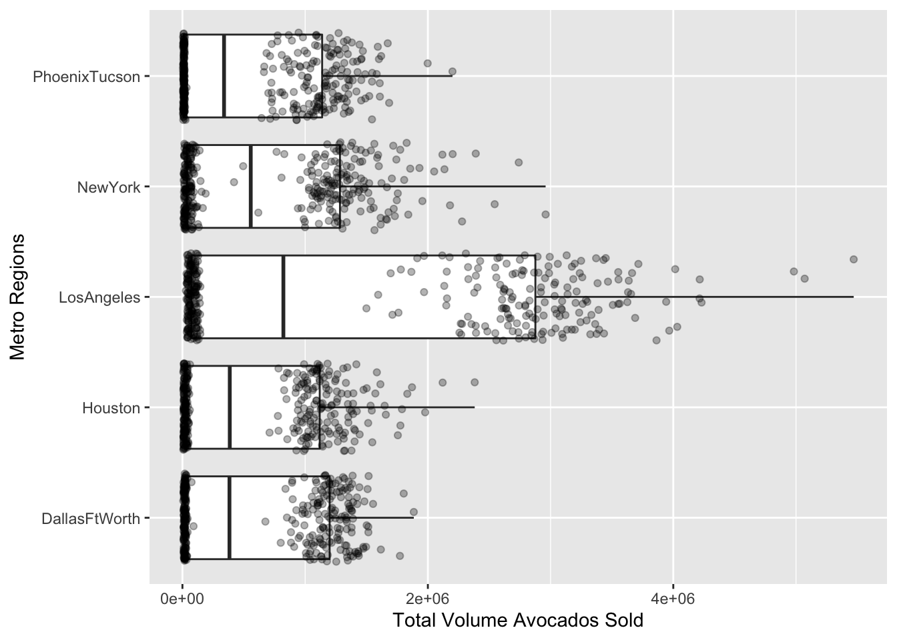
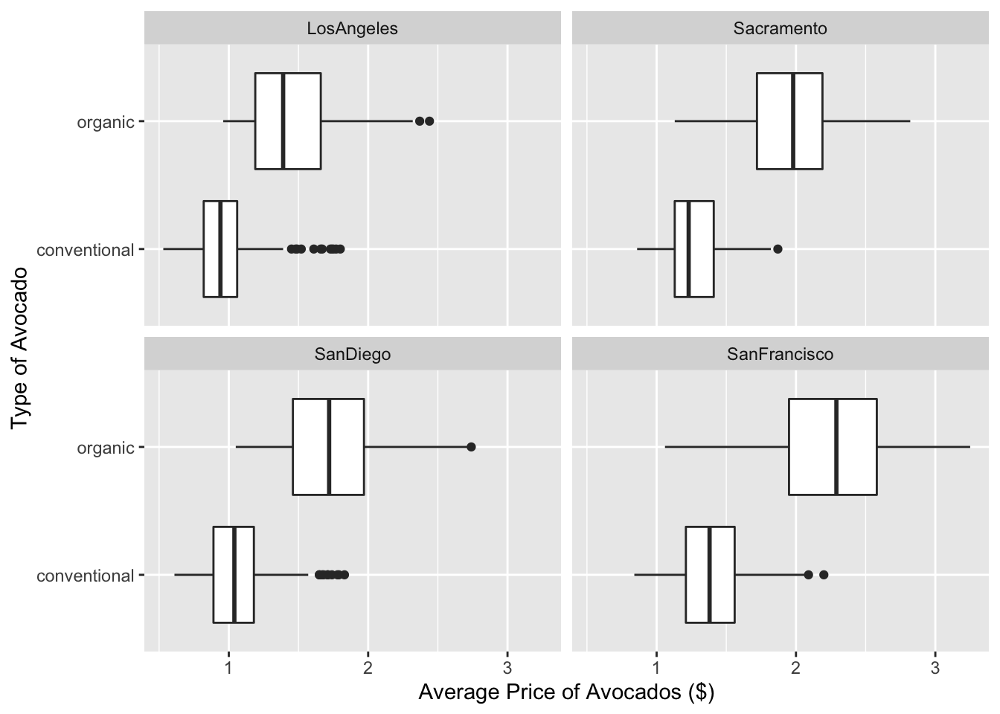
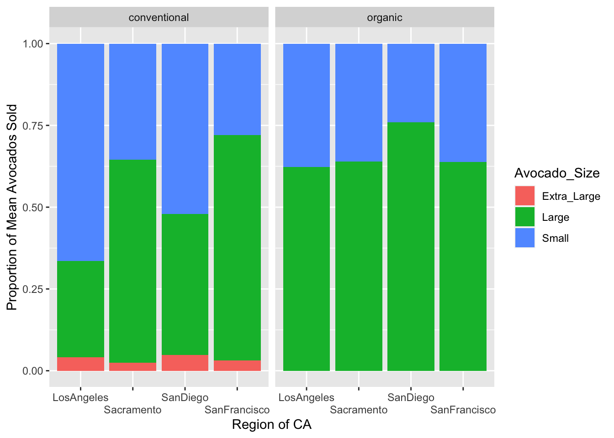

Code
library(tidyverse)One revision below indicated by: “REVISED”
library(tidyverse)avos <- read_csv(here::here("supporting_artifacts",
"Labs",
"Lab4",
"avocado.csv")
)This data set is about avocado sales in specific US regions which include broad regions of the US and specific city regions as well as a total US row. The data came direly from retail sales of Hass avocados on retailer’s cash registers and was collected from 2015 to 2018. It reflects a multi-outlet data set, meaning retail stores were aggregated from all the following channels: grocery, mass, club, drug, dollar, and military. It also includes weekly scan data for National retail volume (units) and price. It has 14 variables and 18259 observations which were over multiple dates.
This is my overall steps of cleaning to the data set before I split it up based on regions and cities. I separated the date so the year, month and day had their own column (asked in question 4) and removed the extra column that also had year. I also changed the name of the PLU codes for the avocados to something understandable.
avos_clean <- avos |>
separate(col = Date,
into = c("Year", "Month", "Day"),
sep = "-",
remove = TRUE) |>
select(!year) |>
rename("Small" = `4046`,
"Large" = `4225`,
"Extra_Large" = `4770`)Looking at the region column in the avos data set, it contained more than just regions, but also states, a total US section, and city’s. I decided to split this data set into two, one for regions and the other for city’s. For the regions_avos data set I kept the West, SouthCentral, Northeast, Plains, GreatLakes, and Southeast because the other regions listed are contained within these regions.
# First isolating the regions I want to keep and put then in a small data set.
regions_list <- avos_clean |>
distinct(region) |>
filter(region %in% c("West",
"SouthCentral",
"Northeast",
"Plains",
"GreatLakes",
"Southeast")
)
# Next creating the new region data set by getting rid of all the values in the
# region column I dont want.
avos_regions <- avos_clean |>
semi_join(regions_list, by = "region")
# Then I removed the small region data set I made at the start so it does not
# clog up my workspace.
remove(regions_list)Note: I repeat this theme above (creating a data set, then removing it) a few times in my code below. I did this so I could practice the semi and anti joins for this lab assignment.
metro_list <- avos_clean |>
distinct(region) |>
filter(region %in% c("West",
"SouthCentral",
"Northeast",
"Plains",
"GreatLakes",
"Southeast",
"California",
"WestTexNewMexico",
"Midsouth",
"NorthernNewEngland",
"TotalUS")
)
avos_metro <- avos_clean |>
anti_join(metro_list, by = "region") |>
rename("metro" = region)
remove(metro_list)Which major region sold the most organic, small Hass avocados in 2017?
avos_regions |>
filter(Year == 2017) |>
select(Small,
region) |>
group_by(region) |>
summarize(sum_small = sum(Small)
) |>
slice(which.max(sum_small)
)# A tibble: 1 × 2
region sum_small
<chr> <dbl>
1 SouthCentral 169164031.Notes: the function which.max() and which.min() I used in my previous lab, I discoved those fruncitons on stackoverflow here: https://stackoverflow.com/questions/59887497/top-n-return-both-max-and-min-value-r provided by @Gregor user. This function finds the index of the max or min, so then when paired with slice(), it will slice at that index.
Answer: South Central region had sold the most small Hass avocados in 2017 compared to all other regions.
Use the separate() function to split the Date variable into year, month, and day. In which month is the highest volume of avocado sales?
Note: I decided to do the separation of the date in an earlier step: Cleaning the Data Set. So that the change would be applied to the other two data sets I created after.
avos_regions |>
select(`Total Volume`,
Month) |>
group_by(Month) |>
summarise(sum_tot_vol = sum(`Total Volume`)
) |>
slice(which.max(sum_tot_vol)
)# A tibble: 1 × 2
Month sum_tot_vol
<chr> <dbl>
1 02 488618923.Answer: February had the highest volume of avocado sales compared to all other months.
Which metro area regions sold the most total avocados? Plot side-by-side boxplots of total volume for only the five regions with the highest averages for the Total Volume variable.
# Note: Using the avos_metro data set becasue looking at metro areas.
cities <- avos_metro |>
select(metro,
`Total Volume`) |>
group_by(metro) |>
summarise(mean_tot_vol = mean(`Total Volume`)
) |>
arrange(desc(mean_tot_vol)) |>
slice(1:5)
avos_metro |>
semi_join(cities, by = "metro") |>
ggplot(mapping = aes(x = `Total Volume`,
y = metro)
) +
geom_boxplot() +
geom_jitter(alpha = 0.3) +
labs(x = "Total Volume Avocados Sold",
y = "Metro Regions")
remove(cities)Answer: The top five metro area regions that sold the most avocados (by average) were LA, NY, Phoenix, Huston, and Dallas. The metro region that sold the most avocados (by average) was LA.
REVISED: In which regions is the price of organic versus conventional avocados most different? Support your answer with a few summary statistics and a visualization.
# Thank you for the feedback!
avos_cali <- avos_metro |>
filter(metro %in% c("LosAngeles",
"SanDiego",
"Sacramento",
"SanFrancisco")
)
# Here is the summary table:
avos_cali |>
select(AveragePrice,
type,
metro) |>
group_by(metro,
type) |>
summarise(mean_price = mean(AveragePrice)
) |>
pivot_wider(names_from = type,
values_from = mean_price) |>
mutate(diff_in_mean = organic - conventional) |>
rename("mean_conventional" = conventional,
"mean_organic" = organic) |>
arrange(diff_in_mean)# A tibble: 4 × 4
# Groups: metro [4]
metro mean_conventional mean_organic diff_in_mean
<chr> <dbl> <dbl> <dbl>
1 LosAngeles 0.976 1.46 0.479
2 SanDiego 1.06 1.73 0.673
3 Sacramento 1.27 1.97 0.695
4 SanFrancisco 1.40 2.21 0.814# Here is the visual plot
avos_cali |>
ggplot(mapping = aes(x = AveragePrice,
y = type)
) +
geom_boxplot() +
facet_wrap(~ metro) +
labs(x = "Average Price of Avocados ($)",
y = "Type of Avocado")
Note: I chose to use the broad region data set and not the city one for this question.
Answer: West, closely followed by the Plains then the Northeast, were the regions that had the greatest difference in their average prices for organic and conventional avocados.
The following plot shows, for all four California regions, the proportion of the mean Hass avocado sales that are small, large, or extra large; conventional vs. organic. Recreate the plot.
avos_cali |>
pivot_longer(cols = c(Small,
Large,
Extra_Large),
names_to = "Avocado_Size",
values_to = "amt_sold") |>
group_by(metro,
Avocado_Size,
type) |>
summarise(mean_amt_sold = mean(amt_sold)
) |>
ggplot(mapping = aes(x = metro,
y = mean_amt_sold)
) +
geom_col(mapping = aes(fill = Avocado_Size),
position = position_fill(reverse = TRUE)
) +
facet_wrap(~ type) +
scale_x_discrete(guide = guide_axis(n.dodge = 2)
) +
labs(x = "Region of CA",
y = "Proportion of Mean Avocados Sold"
)
Note 1: Learned how to stagger the x axis labels with scale_x_discrete(guide = guide_axis(n.dodge = 2)). The n.dodge = 2 means it will alternate the dogde everyother name. If it were 3, it would staircase down in threes. I got this code from https://community.rstudio.com/t/x-axis-labels-overlap-want-to-rotate-labels-45/63800/2. I also learned how to rotate the labels by 45º with theme(axis.text.x = element_text(angle = 45, vjust = 1, hjust = 1))
Note 2: For this question I found out how to reverse the order of the stacked column in the geom_col() from https://stackoverflow.com/questions/42710056/reverse-stacked-bar-order by using position = position_fill(reverse = TRUE). This code is really straight forward and easy to understand.